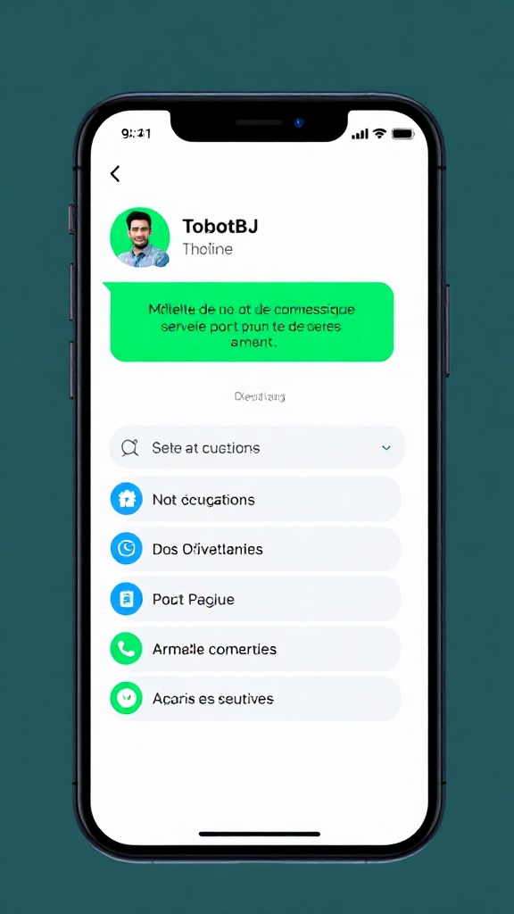
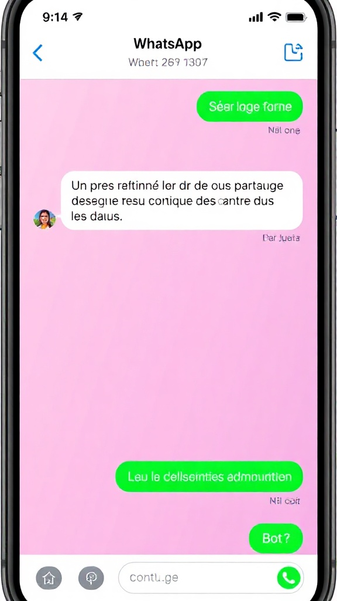
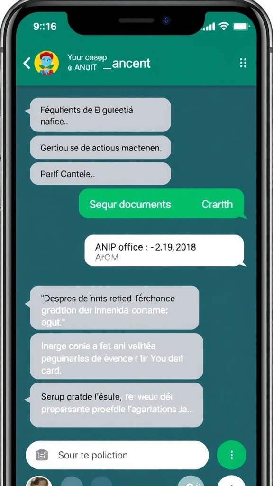
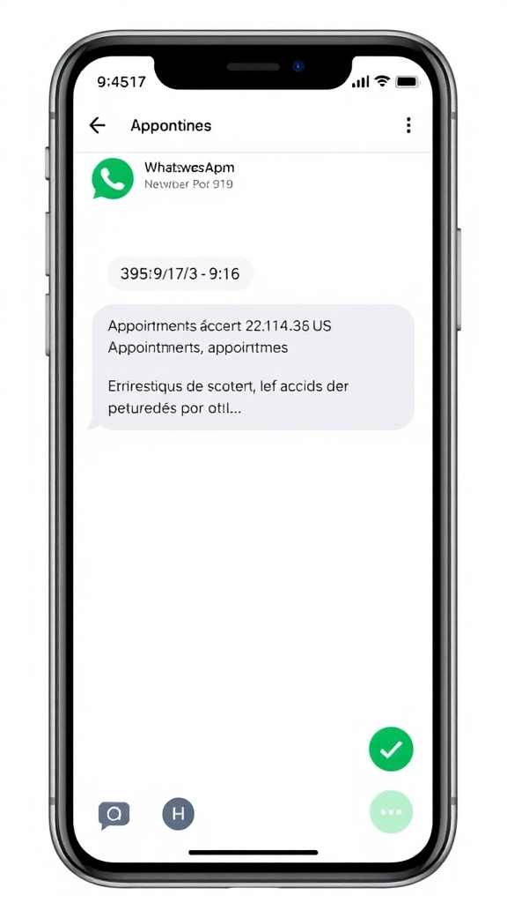
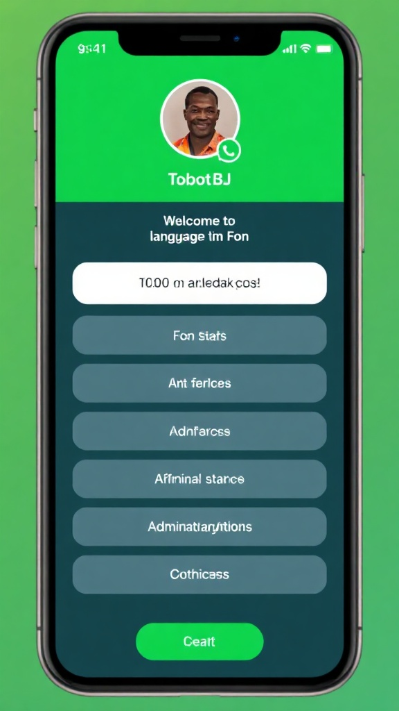
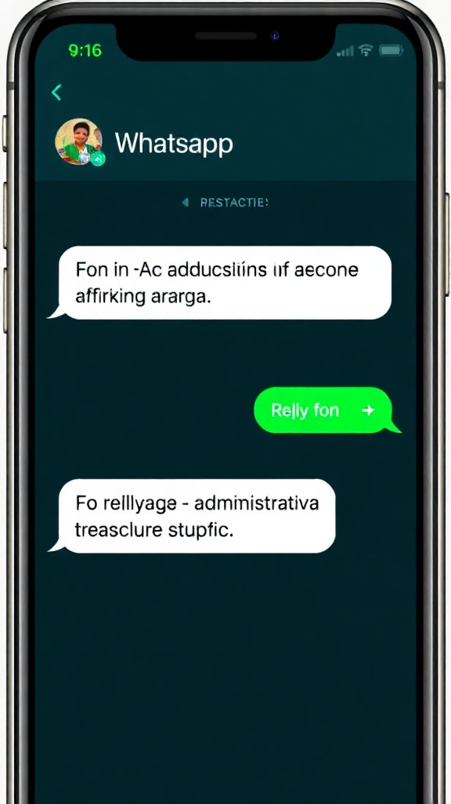
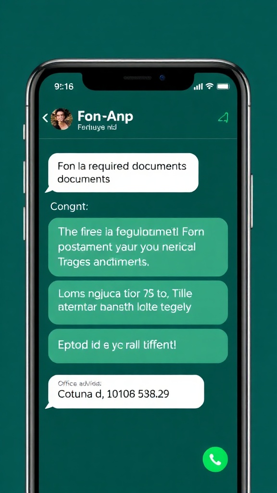
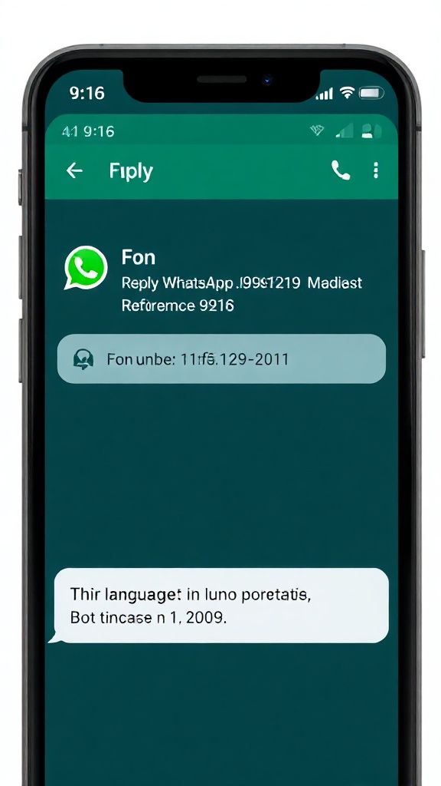

Citoyen+ est l'assistant IA citoyen multicanal du Bénin. Il guide les Béninois résidant au pays dans leurs démarches administratives — carte d'identité ANIP, ePasseport, état civil, casier judiciaire, RCCM, attestations fiscales — sur WhatsApp, SMS, voix ou web, en français et en langues locales (Fon, Yoruba, Bariba, Dendi), 24h/24.
01 — Contexte
Le Bénin a investi massivement dans la dématérialisation de ses services publics : le Portail National des Services Publics (service-public.bj) référence des centaines de procédures, la PNPE permet le paiement électronique, le socle d'interopérabilité X-Road relie les administrations, et l'ANIP délivre la carte d'identité biométrique. Pourtant, sur le terrain, le citoyen béninois — particulièrement hors des grandes villes — ne sait souvent pas quels documents préparer, quel service contacter, ni comment suivre l'avancement de son dossier. L'information existe mais reste difficile d'accès pour qui n'est pas à l'aise avec le web. Citoyen+ rend cette information disponible là où le citoyen est déjà : sur WhatsApp, par SMS et par la voix, en français et dans les langues nationales.
02 — Objectif
Citoyen+ poursuit une double mission : simplifier radicalement l'accès aux services publics pour le citoyen, et donner à l'administration une vision continue, en temps réel, des questions que se posent vraiment les Béninois sur leurs démarches.
03 — Solution technique
Citoyen+ repose sur une architecture RAG (Retrieval-Augmented Generation) : les fiches du Portail National des Services sont indexées dans une base vectorielle, interrogée à chaque question. Un modèle de langage (Claude) génère ensuite une réponse précise, jamais en dehors des sources. Une couche de transcription/synthèse vocale (alignée avec les modèles JaimeMaLangue à mesure de leur disponibilité) permet l'usage en Fon, Yoruba, Bariba et Dendi sur les canaux SMS, WhatsApp audio et téléphonie.








04 — Réalisation
Six étapes opérationnelles, de l'indexation des fiches du Portail National à un service multicanal piloté, en passant par une phase pilote ciblée sur deux ou trois démarches à fort volume.
05 — Chiffrage indicatif
Citoyen+ mutualise une grande partie des briques (indexation, RAG, LLM) avec DiasporaLink. La phase pilote nationale est donc rapide et économique ; l'enveloppe principale concerne l'ouverture multicanal (SMS, voix) et l'extension linguistique. Conversion indicative à 1 € ≈ 655 FCFA.
06 — Pour aller plus loin
Cette page peut être complétée par un pitch oral synthétique et une foire aux questions conçue pour anticiper les objections institutionnelles les plus courantes.
Prochaine étape
Six mois suffisent pour avoir un service multicanal opérationnel en français et en Fon, testé par les citoyens de deux communes pilote. La base documentaire existe, l'infrastructure SMART GOUV est prête, les modèles JaimeMaLangue se renforcent — il ne manque que la décision de démarrer.
Bonjour, et merci de me recevoir.
Je voudrais vous présenter Citoyen+, un assistant IA citoyen multicanal pour les Béninois résidant au Bénin, qui s'inscrit directement dans le programme SMART GOUV et la Stratégie Nationale d'Intelligence Artificielle et des Mégadonnées 2023-2027. C'est le cas d'usage A, identifié priorité n°1 dans la cartographie des services publics IA.
Le constat est connu. Le Bénin a fait un travail remarquable de dématérialisation : le Portail National des Services Publics référence des centaines de procédures, X-Road relie les administrations, BjPay permet le paiement en ligne, l'ANIP délivre la carte d'identité biométrique. Mais sur le terrain, le citoyen — surtout hors de Cotonou et de Porto-Novo — ne sait pas par où commencer. L'information existe, elle est officielle, elle est en ligne — mais elle reste invisible pour celui qui n'a pas le réflexe du web, ou qui est plus à l'aise en Fon ou en Bariba qu'en français écrit. Le résultat : des dossiers mal préparés, des allers-retours aux guichets, et des e-services sous-utilisés.
Citoyen+ répond à cela par un canal unique et universel : la conversation. L'utilisateur pose sa question — sur WhatsApp, par SMS, par appel téléphonique, ou sur le web. Citoyen+ comprend, recherche dans sa base de connaissances — les fiches officielles du Portail National — et répond clairement : voici les documents à préparer, voici où vous rendre, voici le délai, voici le coût, et voici le lien pour payer sur BjPay. En français, en Fon, et progressivement en Yoruba, Bariba et Dendi grâce au travail mené par JaimeMaLangue.
Sur le plan technique, Citoyen+ repose sur une architecture RAG, Retrieval-Augmented Generation. Ce n'est pas une IA qui invente : c'est un système qui interroge des sources officielles vérifiées et les synthétise en réponse lisible. Le modèle de langage utilisé, Claude d'Anthropic, est calibré pour ne jamais répondre hors de sa base documentaire — si l'information n'est pas dans le Portail National, Citoyen+ le dit clairement et oriente vers l'agent humain compétent.
Trois raisons rendent ce projet particulièrement pertinent pour l'État. Premièrement, il valorise un investissement déjà réalisé : nous ne créons pas de contenu, nous rendons accessible celui qui existe déjà. Deuxièmement, il désengorge les guichets : les agents se concentrent sur les dossiers complexes pendant que Citoyen+ répond aux questions d'orientation 24h/24. Troisièmement, il génère un observatoire vivant : chaque question est un signal sur ce qui bloque les citoyens, et l'État peut ajuster ses fiches, ses procédures, ses campagnes de communication en continu.
La phase pilote peut démarrer en moins de six mois, sur deux ou trois démarches à fort volume — carte ANIP, acte de naissance, casier judiciaire — dans une commune urbaine et une commune rurale, en français et en Fon. L'enveloppe estimative est de 15 000 à 32 000 euros pour ce pilote multicanal. C'est un investissement modeste pour un service qui touche potentiellement 13 millions de citoyens et qui devient, dès sa généralisation, le bras conversationnel naturel de SMART GOUV.
Citoyen+ n'est pas une expérimentation isolée. C'est l'extension logique de l'infrastructure numérique que le Bénin a déjà bâtie, rendue accessible à toute la population dans la langue de chacun. Il forme un duo cohérent avec DiasporaLink, qui couvre la diaspora : ensemble, ils incarnent la promesse d'un État béninois conversationnel, souverain et linguistiquement inclusif.
Je serais heureux de vous présenter le schéma d'architecture, le plan de déploiement du pilote et les modalités de partenariat institutionnel pour avancer.